| 1 | 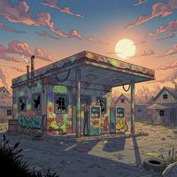 | Benzínka
packages/server/seed/karty/benzinka.jpg | Karty – Lokality | 3 | Jasné slnko na pastelovej ružovej oblohe, pestré graffiti, takmer denná scéna; vôbec nie šero. | – | prerobiť |
| 2 | | Sypač
packages/server/seed/karty/kulturista.jpg | Karty – Občania | 3 | Superhrdinská anatómia (prehnané svaly), plochá čistá kresba, kužeľ svetla zo žiarovky; nesedí s realistickými proporciami. | – | prerobiť |
| 3 | 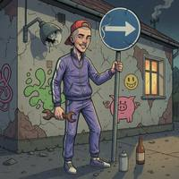 | Vandal
packages/server/seed/karty/vandal.jpg | Karty – Občania | 3 | Najviac uteká: pastelová, plochá kresba bez zrna a tieňov, detské graffiti (smajlík, prasiatko), tvár ako z detského komiksu. | – | prerobiť |
| 4 | 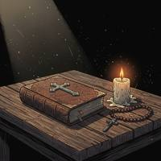 | Svätý text
packages/server/seed/karty/svaty_text.jpg | Karty – Nástroje | 2 | Šikmý kužeľ svetla (spotlight) dopadá na Bibliu – presne to, čo pravidlo 5 zakazuje; plochý čierny fond. | Kužeľ svetla na predmete | prerobiť |
| 5 | 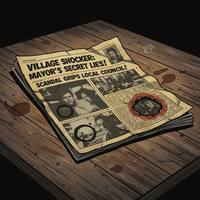 | Noviny
packages/server/seed/karty/noviny.jpg | Karty – Nástroje | 1 | Čistejšia zátišná kresba; na novinách veľké čitateľné titulky „VILLAGE SHOCKER: MAYOR’S SECRET LIES!“. | Nápisy v obraze (titulky) | prerobiť |
| 6 | 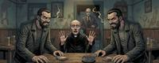 | Pás 02-ako-sa-vyhrava
apps/web/src/stranky/pravidla-obrazky/02-ako-sa-vyhrava.jpg | Pásy pravidiel | 1 | Štýl v norme; dvaja hráči po stranách sú zrkadlové kópie toho istého muža (overené pri plnej veľkosti). | Klony postáv | prerobiť |
| 7 | | Dievčina na vydaj
packages/server/seed/karty/dievcina_na_vydaj.jpg | Karty – Občania | 2 | Sýta červeno-zelená kasínová paleta, svietiace tabule v pozadí (proti „no neon signs“) a dva kužele svetla zhora. | Neónové tabule (jadro štýlu: no neon signs) | doladiť |
| 8 | 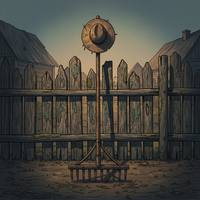 | Hrable
packages/server/seed/karty/hrable.jpg | Karty – Nástroje | 2 | Zvláštny predmet: hrable stoja kolmo na zuboch s klobúkom navrchu, prázdna scéna bez príbehu. | Nezmyselný predmet (hrable stoja samy, klobúk) | doladiť |
| 9 | 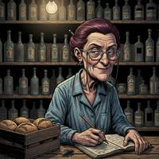 | Predavačka
packages/server/seed/karty/predavacka.jpg | Karty – Občania | 2 | Tenká linka, ploché vyfarbenie, studená sivomodrá paleta bez hlbokých tieňov; mäkšia ako vzory. | Pseudo-nápisy (etikety, písmo v zošite) – mierne | doladiť |
| 10 | | Zrkadlo
packages/server/seed/karty/zrkadlo.jpg | Karty – Nástroje | 2 | Zrkadlo samo svieti – svetlý kruh v strede predmetu pôsobí ako reflektor. | Kruh svetla na predmete | doladiť |
| 11 | 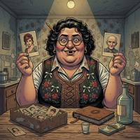 | Dohadzovačka
packages/server/seed/karty/dohadzovacka.jpg | Karty – Občania | 2 | Kreslená „cartoon“ tvár (okuliare, medzera v zuboch), plochý svetlý interiér, kužeľ svetla zhora. | – | doladiť |
| 12 | 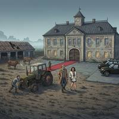 | Družstvo
packages/server/seed/karty/druzstvo.jpg | Karty – Lokality | 2 | Ploché sivé denné svetlo, drobné postavy, chýba teplý akcent a zrno. | – | doladiť |
| 13 | 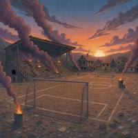 | Ihrisko
packages/server/seed/karty/ihrisko.jpg | Karty – Lokality | 2 | Sýty oranžovo-ružový západ slnka, pestrá obloha (dym z horiacich košov má zdroj). | – | doladiť |
| 14 | 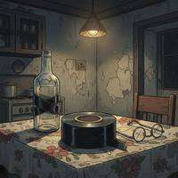 | Izolačka
packages/server/seed/karty/pistalka.jpg | Karty – Nástroje | 2 | Bledá sivozelená kuchyňa, tenká linka, nízky kontrast, chýba hrubá čierna kontúra aj sýty akcent. | – | doladiť |
| 15 | 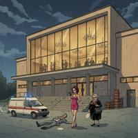 | Kultúrny dom
packages/server/seed/karty/kulturny_dom.jpg | Karty – Lokality | 2 | Presvetlená architektonická kresba, veľké svietiace okná, plochá ilustrácia. | – | doladiť |
| 16 | 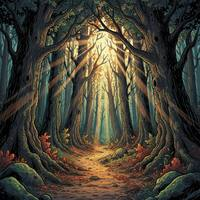 | Lesná cesta
packages/server/seed/karty/lesna_cesta.jpg | Karty – Lokality | 2 | Rozprávkové lúče slnka, sýta zelená a oranžová; vyzerá ako fantasy, nie dedina. | – | doladiť |
| 17 | 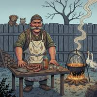 | Mäsiar
packages/server/seed/karty/masiar.jpg | Karty – Občania | 2 | Ploché sivomodré denné svetlo bez hĺbky tieňov, karikatúra bez zrna. | – | doladiť |
| 18 | | Opatrovateľka
packages/server/seed/karty/opatrovatelka.jpg | Karty – Občania | 2 | Iný filter: hrubá tmavá vinetácia okrajov, hladké vyfarbenie, „retro“ dojem, ktorý v sade nie je. | – | doladiť |
| 19 | 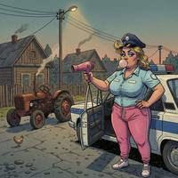 | Policajtka
packages/server/seed/karty/policajtka.jpg | Karty – Občania | 2 | Svetlá pastelová paleta (ružové tepláky, bledomodrá), plochá kresba, takmer denná scéna. | – | doladiť |
| 20 | | Predsedova vila
packages/server/seed/karty/predsedova_vila.jpg | Karty – Lokality | 2 | Svetlý teplý interiér bez hlbokých tieňov, plochá kresba. | – | doladiť |
| 21 | | Profesionálny tipér
packages/server/seed/karty/profesionalny_tiper.jpg | Karty – Občania | 2 | Výrazný kužeľ svetla na postavu, hladká digitálna linka, prázdne pozadie. | – | doladiť |
| 22 | | Pás 14-lokality
apps/web/src/stranky/pravidla-obrazky/14-lokality.jpg | Pásy pravidiel | 2 | Denná studená sivomodrá krajina bez teplého akcentu a bez postáv, plochá. | – | doladiť |
| 23 | | Silná, nezávislá žena
packages/server/seed/karty/silna_nezavisla_zena.jpg | Karty – Občania | 2 | Denné svetlo, pastelové prádlo, hladká čistá linka bez zrna; pôsobí ako iný komiks. | – | doladiť |
| 24 | 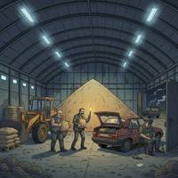 | Sklad
packages/server/seed/karty/sklad.jpg | Karty – Lokality | 2 | Studené žiarivky a modrošedá hala, chýba teplé svetlo; najchladnejšia lokalita. | – | doladiť |
| 25 | 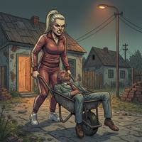 | Snúbenica
packages/server/seed/karty/snubenica.jpg | Karty – Občania | 2 | Čistá digitálna linka bez zrna, ploché vyfarbenie, sivé súmračné svetlo. | – | doladiť |
| 26 | 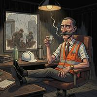 | Vedúcko
packages/server/seed/karty/veducko.jpg | Karty – Občania | 2 | Tenká linka a mäkké ploché tiene, pozadie z rozmazaných čiernych ťahov; satira funguje. | – | doladiť |
| 27 | 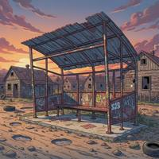 | Zastávka
packages/server/seed/karty/zastavka.jpg | Karty – Lokality | 2 | Pastelový ružový súmrak, svetlá plochá scéna. | – | doladiť |
| 28 | 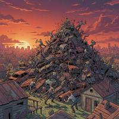 | Zberný dvor
packages/server/seed/karty/zberny_dvor.jpg | Karty – Lokality | 2 | Sýty ružovo-oranžový západ slnka, veľkomestské pozadie; svetlejšie ako vzory. | – | doladiť |
| 29 | 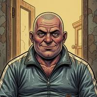 | avatar-05
packages/server/seed/avatary/avatar-05.jpg | Avatary | 2 | Presvetlené žlté pozadie dverí, najsvetlejší avatar, plochý. | – | doladiť |
| 30 | 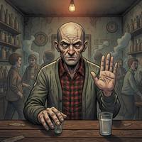 | Anonymný alkoholik
packages/server/seed/karty/anonymny_alkoholik.jpg | Karty – Občania | 1 | Štýl sedí, ale oblaky dymu sa vznášajú v miestnosti bez viditeľnej cigarety či iného zdroja (overené pri plnej veľkosti). | Dym bez zdroja | doladiť |
| 31 | | Nealko
packages/server/seed/karty/nealko.jpg | Karty – Nástroje | 1 | Zátišie sedí; na fľaši čitateľná etiketa „NON-ACHOLIC GINGER ALE“ (aj s preklepom). | Nápis v obraze (etiketa) | doladiť |
| 32 | | Praudovravec
packages/server/seed/karty/praudovravec.jpg | Karty – Občania | 1 | Štýl sedí, ale plagáty nesú čitateľný text „NO VACCINE“, „THEY ARE WATCHING“. | Nápisy v obraze (plagáty) | doladiť |
| 33 | | Pás 01-co-je-naex
apps/web/src/stranky/pravidla-obrazky/01-co-je-naex.jpg | Pásy pravidiel | 1 | Štýl v norme; dvaja hráči sú takmer klony (rovnaké olivové tričko, postava, póza, karty). | Klony postáv (mierne) | doladiť |
| 34 | | Pás 07-pitka-a-naex
apps/web/src/stranky/pravidla-obrazky/07-pitka-a-naex.jpg | Pásy pravidiel | 1 | Štýl v norme; dav rúk s pohármi je chaotický, niektoré ruky nemajú jasné telo. | Zložité ruky (mierne) | doladiť |
| 35 | 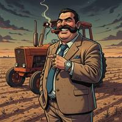 | Starosta nové
packages/server/seed/karty/starosta.jpg | Karty – Starešinovia | 1 | Teplé denné svetlo nad poľom, o stupeň svetlejšie než vzory; v pravom dolnom rohu pseudo-podpis „ЛIFT“. | Nápis v obraze (pseudo-podpis v rohu) | doladiť |
| 36 | | Veľmi smútiaca vdova
packages/server/seed/karty/velmi_smutiaca_vdova.jpg | Karty – Občania | 1 | Štýl sedí, ale náhrobok nesie čitateľný anglický nápis „BELOVED HUSBAND, REST IN PEACE“. | Nápis v obraze (náhrobok) | doladiť |
| 37 | 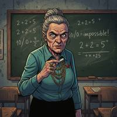 | Vychovávateľka
packages/server/seed/karty/vychovavatelka.jpg | Karty – Starešinovia | 1 | Štýl sedí, ale na tabuli je čitateľný anglický text („2+2=5“, „10/0 = impossible!“). | Nápis v obraze (tabuľa) | doladiť |
| 38 | 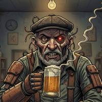 | stamgast nové
packages/server/seed/avatary/boti/stamgast.jpg | Avatary botov | 1 | Štýl sedí (polorobot), ale hrubý pramienok „dymu“ stúpa z pivového krígľa – pivo nedymí a cigareta nikde nie je (overené pri plnej veľkosti). | Dym bez zdroja (z piva) | doladiť |
| 39 | 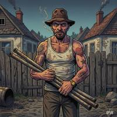 | Živnostník nové
packages/server/seed/karty/zivnostnik.jpg | Karty – Občania | 1 | Štýl sedí; v pravom dolnom rohu výrazný biely pseudo-podpis „IORSHH“ (ten istý ako na Zámočníkovi). | Nápis v obraze (pseudo-podpis v rohu) | doladiť |
| 40 | 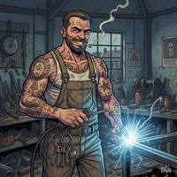 | Zámočník nové
packages/server/seed/karty/zamocnik.jpg | Karty – Občania | 0 | Vzor štýlu; v pravom dolnom rohu biely pseudo-podpis „IORSHH“. | Nápis v obraze (pseudo-podpis v rohu) | doladiť |
| 41 | 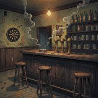 | Krčma
packages/server/seed/karty/krcma.jpg | Karty – Lokality | 1 | Štýl v norme; pramene dymu idú z popolníka, ľavý sa však stáča až k stropu a vyzerá, akoby padal zo stropu (na hrane). | Dym – na hrane (zdroj je popolník) | nechať |
| 42 | 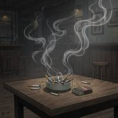 | Pozadie fajciar
packages/server/seed/bodovanie/pozadia/fajciar.jpg | Pozadia bodovacích kariet | 1 | Pozadie: mohutné kúdoly dymu, ale zo zdroja (popolník); vľavo dole drobný pseudo-podpis. | Nápis v obraze (drobný podpis v rohu) – mierne | nechať |
| 43 | 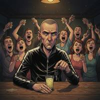 | Šofér
packages/server/seed/karty/sofer.jpg | Karty – Občania | 1 | Štýl sedí; ženy v dave za ním majú takmer rovnakú tvár a účes. | Klony v pozadí (mierne) | nechať |
| 44 | 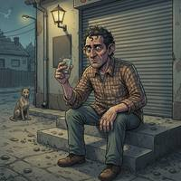 | Absťák
packages/server/seed/karty/abstak.jpg | Karty – Kliatby | 1 | Čistejšia linka, tlmené; v norme. | – | nechať |
| 45 | 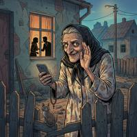 | Bzdocha
packages/server/seed/karty/klebetnica.jpg | Karty – Občania | 1 | Hladšia kresba, studenšia; v norme. | – | nechať |
| 46 | 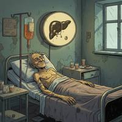 | Cirhóza
packages/server/seed/karty/cirhoza.jpg | Karty – Kliatby | 1 | Studenšia nemocničná paleta, čistejšia linka; v norme. | – | nechať |
| 47 | 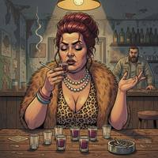 | Degustátorka
packages/server/seed/karty/degustatorka.jpg | Karty – Občania | 1 | Kužeľ svetla z lampy na postavu, o niečo plochšia; inak sedí. | – | nechať |
| 48 | 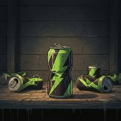 | Energeťák
packages/server/seed/karty/energetak.jpg | Karty – Nástroje | 1 | Toxicky zelené plechovky ako jediná farba; v norme. | – | nechať |
| 49 | | Farár
packages/server/seed/karty/farar.jpg | Karty – Starešinovia | 1 | Vzor; svätožiara lúčov z vitráže za hlavou je na hrane pravidla o kuželi svetla, ale satiricky funguje. | – | nechať |
| 50 | | Finančná poradkyňa
packages/server/seed/karty/financna_poradkyna.jpg | Karty – Občania | 1 | Vzorová karta, ale obrázok v seede nezodpovedá vzorovému promptu (sivé tepláky namiesto pásikavého blejzra a maskáčov); na zmluve drobné písmo. | – | nechať |
| 51 | 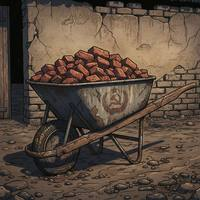 | Fúrik
packages/server/seed/karty/furik.jpg | Karty – Nástroje | 1 | Zátišie, v norme. | – | nechať |
| 52 | 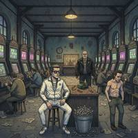 | Herňa
packages/server/seed/karty/herna.jpg | Karty – Lokality | 1 | Svietiace obrazovky automatov sú na hrane „no neon“; inak v norme. | – | nechať |
| 53 | 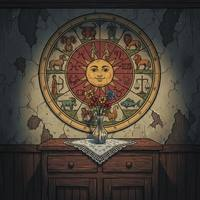 | Horoskop
packages/server/seed/karty/horoskop.jpg | Karty – Nástroje | 1 | Svetlejšia, dekoratívna; v norme. | – | nechať |
| 54 | 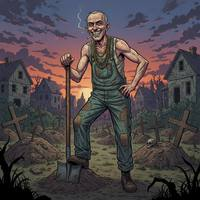 | Hrobár
packages/server/seed/karty/hrobar.jpg | Karty – Starešinovia | 1 | Sýta fialovo-oranžová obloha súmraku, pestrejšia než vzory. | – | nechať |
| 55 | 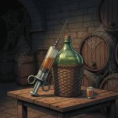 | Injekcia
packages/server/seed/karty/lievik.jpg | Karty – Nástroje | 1 | Teplá pivnica s pavučinami, zrno; linka o niečo tenšia. | – | nechať |
| 56 | 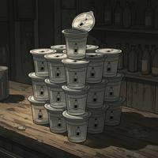 | Jogurt
packages/server/seed/karty/jogurt.jpg | Karty – Nástroje | 1 | Zátišie, v norme. | – | nechať |
| 57 | 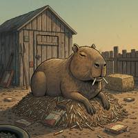 | Kapybara
packages/server/seed/karty/kapybara.jpg | Karty – Zvieratá | 1 | Hladšia, mäkšia kresba s menej zrnom, žltkasté denné svetlo; v norme. | – | nechať |
| 58 | 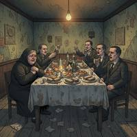 | Kar
packages/server/seed/karty/kar.jpg | Karty – Lokality | 1 | V norme. | – | nechať |
| 59 | | Krabička cigariet
packages/server/seed/karty/cigorky.jpg | Karty – Nástroje | 1 | Šikmý pruh svetla v pozadí, zátišie; v norme. | – | nechať |
| 60 | 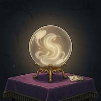 | Krištáľová guľa
packages/server/seed/karty/kristalova_gula.jpg | Karty – Nástroje | 1 | Žiara gule je prirodzená súčasť predmetu; v norme. | – | nechať |
| 61 | | Krokodíl
packages/server/seed/karty/krokodil.jpg | Karty – Zvieratá | 1 | O niečo hladšia kresba, svetlejšie pozadie; v norme. | – | nechať |
| 62 | 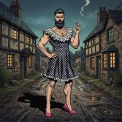 | Liberál
packages/server/seed/karty/liberal.jpg | Karty – Občania | 1 | Svetlejšia ulica, mierne pestrejšia; v norme. | – | nechať |
| 63 | | Miňištrant
packages/server/seed/karty/ministrant.jpg | Karty – Občania | 1 | Studené zelené svetlo monitora, inak sedí. | – | nechať |
| 64 | 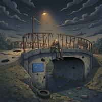 | Most
packages/server/seed/karty/most.jpg | Karty – Lokality | 1 | V norme; vlajka EÚ ako satira, lampa svieti na scénu, nie na predmet. | – | nechať |
| 65 | | Obecný úrad
packages/server/seed/karty/obecny_urad.jpg | Karty – Lokality | 1 | Biela fasáda v daždi, studená; v norme. | – | nechať |
| 66 | 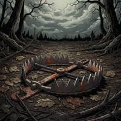 | Pasca
packages/server/seed/karty/pasca.jpg | Karty – Nástroje | 1 | Sedí, studenšie. | – | nechať |
| 67 | 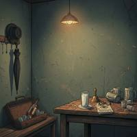 | Pozadie abstinent
packages/server/seed/bodovanie/pozadia/abstinent.jpg | Pozadia bodovacích kariet | 1 | Pozadie bodovacej karty: prázdna stena, mäkšia tenká linka; ako podklad pod text v norme. | – | nechať |
| 68 | 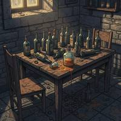 | Pozadie alkoholik
packages/server/seed/bodovanie/pozadia/alkoholik.jpg | Pozadia bodovacích kariet | 1 | Pozadie: stôl s fľašami, svetlo z okna; tenšia linka, v norme. | – | nechať |
| 69 | 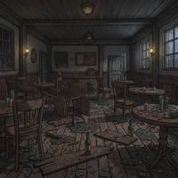 | Pozadie bitkar
packages/server/seed/bodovanie/pozadia/bitkar.jpg | Pozadia bodovacích kariet | 1 | Pozadie: rozbitá krčma, tlmené; v norme. | – | nechať |
| 70 | | Pozadie exekutor
packages/server/seed/bodovanie/pozadia/exekutor.jpg | Pozadia bodovacích kariet | 1 | Pozadie: sklad zabavených vecí, studenšie; v norme. | – | nechať |
| 71 | | Pozadie kmotor
packages/server/seed/bodovanie/pozadia/kmotor.jpg | Pozadia bodovacích kariet | 1 | Pozadie: trezor, kalkulačka, lampa; tenšia linka, v norme. | – | nechať |
| 72 | | Pozadie ohovaracka
packages/server/seed/bodovanie/pozadia/ohovaracka.jpg | Pozadia bodovacích kariet | 1 | Pozadie: okno, ďalekohľad, telefón; o niečo svetlejšie, v norme. | – | nechať |
| 73 | | Pozadie veriaci
packages/server/seed/bodovanie/pozadia/veriaci.jpg | Pozadia bodovacích kariet | 1 | Pozadie: lúče z vitráže padajú na podlahu – na hrane pravidla 5 (nie na predmete). | – | nechať |
| 74 | | Pozadie vypalnik
packages/server/seed/bodovanie/pozadia/vypalnik.jpg | Pozadia bodovacích kariet | 1 | Pozadie: obchod s váhou a pokladňou, studené kachličky; v norme. | – | nechať |
| 75 | | Poľovnícka chata
packages/server/seed/karty/polovnicka_chata.jpg | Karty – Lokality | 1 | V norme. | – | nechať |
| 76 | | Poľovník
packages/server/seed/karty/polovnik.jpg | Karty – Občania | 1 | Noc, les, lampa; linka trochu tenšia, inak sedí. | – | nechať |
| 77 | | Puška
packages/server/seed/karty/puska.jpg | Karty – Nástroje | 1 | Zátišie na dreve, tenšia linka; v norme. | – | nechať |
| 78 | | Pás 03-co-mas-pred-sebou
apps/web/src/stranky/pravidla-obrazky/03-co-mas-pred-sebou.jpg | Pásy pravidiel | 1 | Pohľad zhora, ruky správne; svetlý kruh lampy na stole, mierne. | – | nechať |
| 79 | | Pás 04-kolo
apps/web/src/stranky/pravidla-obrazky/04-kolo.jpg | Pásy pravidiel | 1 | Svetlejší béžový interiér; v norme. | – | nechať |
| 80 | | Pás 05-ciel-a-senok
apps/web/src/stranky/pravidla-obrazky/05-ciel-a-senok.jpg | Pásy pravidiel | 1 | V norme. | – | nechať |
| 81 | | Pás 06-zhromazdenie
apps/web/src/stranky/pravidla-obrazky/06-zhromazdenie.jpg | Pásy pravidiel | 1 | V norme, postavy sa líšia. | – | nechať |
| 82 | | Pás 08-cena-pitia
apps/web/src/stranky/pravidla-obrazky/08-cena-pitia.jpg | Pásy pravidiel | 1 | V norme (dym z popolníka). | – | nechať |
| 83 | | Pás 10-starsi-a-prebytok
apps/web/src/stranky/pravidla-obrazky/10-starsi-a-prebytok.jpg | Pásy pravidiel | 1 | V norme. | – | nechať |
| 84 | | Pás 11-kliatby
apps/web/src/stranky/pravidla-obrazky/11-kliatby.jpg | Pásy pravidiel | 1 | V norme. | – | nechať |
| 85 | | Pás 12-nastroje
apps/web/src/stranky/pravidla-obrazky/12-nastroje.jpg | Pásy pravidiel | 1 | V norme, svetlejšia dielňa. | – | nechať |
| 86 | | Pás 13-pokrocile-tahy
apps/web/src/stranky/pravidla-obrazky/13-pokrocile-tahy.jpg | Pásy pravidiel | 1 | V norme. | – | nechať |
| 87 | | Pás 15-bodovanie
apps/web/src/stranky/pravidla-obrazky/15-bodovanie.jpg | Pásy pravidiel | 1 | V norme. | – | nechať |
| 88 | | Recidivista
packages/server/seed/karty/recidivista.jpg | Karty – Zvieratá | 1 | Sedí, o niečo čistejšia linka. | – | nechať |
| 89 | | Strýko z Ameriky
packages/server/seed/karty/stryko_z_ameriky.jpg | Karty – Občania | 1 | Teplý interiér, mierne čistejšia linka; v norme. | – | nechať |
| 90 | | Telefón
packages/server/seed/karty/telefon.jpg | Karty – Nástroje | 1 | Zátišie, svetlejšia tapeta; v norme. | – | nechať |
| 91 | | Traktorista
packages/server/seed/karty/traktoristka.jpg | Karty – Občania | 1 | Tmavá noc, sedí; čistejšia linka. | – | nechať |
| 92 | | Valaška
packages/server/seed/karty/boxer.jpg | Karty – Nástroje | 1 | Zátišie (Valaška), v norme. | – | nechať |
| 93 | | Vidly
packages/server/seed/karty/vidly.jpg | Karty – Nástroje | 1 | Zátišie, tenšia linka; v norme. | – | nechať |
| 94 | | Vymáhač
packages/server/seed/karty/vymahac.jpg | Karty – Občania | 1 | Čistejšia linka, menej zrna; v norme. | – | nechať |
| 95 | | Vínko
packages/server/seed/karty/vinko.jpg | Karty – Nástroje | 1 | Zátišie, hladšia kresba; v norme. | – | nechať |
| 96 | | Vínna pivnica
packages/server/seed/karty/vinna_pivnica.jpg | Karty – Lokality | 1 | Teplá, čistejšia; v norme. | – | nechať |
| 97 | | Výherné žreby
packages/server/seed/karty/vyherne_zreby.jpg | Karty – Nástroje | 1 | Prázdna horná polovica, slabý motív; v norme. | – | nechať |
| 98 | | Výherný automat
packages/server/seed/karty/vyherny_automat.jpg | Karty – Nástroje | 1 | Zátišie, „777“ na valcoch patrí k predmetu; v norme. | – | nechať |
| 99 | | Záhradkár
packages/server/seed/karty/zahradkar.jpg | Karty – Občania | 1 | Pestré kvety, o niečo sýtejšia paleta; v norme. | – | nechať |
| 100 | | avatar-08
packages/server/seed/avatary/avatar-08.jpg | Avatary | 1 | Para z hrnčeka (horúci nápoj, nie dym); v norme. | – | nechať |
| 101 | | avatar-15
packages/server/seed/avatary/avatar-15.jpg | Avatary | 1 | Hladšia, kreslenejšia tvár, prázdne pozadie; v norme. | – | nechať |
| 102 | | melichar
apps/web/public/melichar.jpg | Melichar / výučba | 1 | Polorobot (zámer), štýlom zodpovedá botom a avatarom. | – | nechať |
| 103 | | Autobusár
packages/server/seed/karty/autobusar.jpg | Karty – Starešinovia | 0 | Sedí: šero v autobuse, zlato, hrubá linka. | – | nechať |
| 104 | | Cintorín
packages/server/seed/karty/cintorin.jpg | Karty – Lokality | 0 | Sedí; okatý zlatý hrob funguje ako satira. | – | nechať |
| 105 | | Dvojčatá
packages/server/seed/karty/dvojcata.jpg | Karty – Občania | 0 | Sedí; dvaja rovnakí muži sú zámer karty Dvojčatá, nie chyba. | – | nechať |
| 106 | | Hasič
packages/server/seed/karty/hasic.jpg | Karty – Občania | 0 | Sedí: požiar je skutočný zdroj dymu. | – | nechať |
| 107 | | Jednota
packages/server/seed/karty/jednota.jpg | Karty – Lokality | 0 | Sedí. | – | nechať |
| 108 | | Kostol
packages/server/seed/karty/kostol.jpg | Karty – Lokality | 0 | Sedí: búrková noc. | – | nechať |
| 109 | | Kočovník
packages/server/seed/karty/kocovnik.jpg | Karty – Občania | 0 | Vzor štýlu (Michalov vzorový prompt č. 3); v pravom dolnom rohu tmavý čmáraný podpis, takmer neviditeľný. | – | nechať |
| 110 | | Krčmárka
packages/server/seed/karty/krcmarka.jpg | Karty – Starešinovia | 0 | Vzor štýlu (Michalov vzorový prompt č. 1). | – | nechať |
| 111 | | Kôň
packages/server/seed/karty/kon.jpg | Karty – Zvieratá | 0 | Sedí. | – | nechať |
| 112 | | Milujúca manželka
packages/server/seed/karty/milujuca_manzelka.jpg | Karty – Občania | 0 | Sedí: stará rašpľa, nočná dedina. | – | nechať |
| 113 | | Pes
packages/server/seed/karty/pes.jpg | Karty – Zvieratá | 0 | Sedí. | – | nechať |
| 114 | | Pijan
packages/server/seed/karty/pijan.jpg | Karty – Občania | 0 | Sedí: krčma, fľaše, teplé šero. | – | nechať |
| 115 | | Podvodník
packages/server/seed/karty/podvodnik.jpg | Karty – Občania | 0 | Vzor štýlu. | – | nechať |
| 116 | | Poštárka
packages/server/seed/karty/postarka.jpg | Karty – Starešinovia | 0 | Vzor štýlu. | – | nechať |
| 117 | | Pás 09-bitka
apps/web/src/stranky/pravidla-obrazky/09-bitka.jpg | Pásy pravidiel | 0 | Sedí. | – | nechať |
| 118 | | Stryná
packages/server/seed/karty/niekoho_stryna.jpg | Karty – Občania | 0 | Vzor štýlu. | – | nechať |
| 119 | | Svokra
packages/server/seed/karty/svokra.jpg | Karty – Občania | 0 | Sedí: stará rašpľa s varechou, šero. | – | nechať |
| 120 | | Veterinár
packages/server/seed/karty/veterinar.jpg | Karty – Starešinovia | 0 | Vzor štýlu: hrubá kontúra, zrno, teplé šero, okatá korupcia. | – | nechať |
| 121 | | Veterán
packages/server/seed/karty/veteran.jpg | Karty – Občania | 0 | Sedí; dym z ohňov má zdroj. | – | nechať |
| 122 | | Veštica
packages/server/seed/karty/vestica.jpg | Karty – Občania | 0 | Sedí; žiara gule je zdroj svetla scény, dym z cigarety. | – | nechať |
| 123 | | Zapaľovač
packages/server/seed/karty/zapalovac.jpg | Karty – Nástroje | 0 | Sedí; dym z cigarety v popolníku. | – | nechať |
| 124 | | avatar-01
packages/server/seed/avatary/avatar-01.jpg | Avatary | 0 | Sedí: hrubá kontúra, zrno, karikovaná realistická tvár, šero. | – | nechať |
| 125 | | avatar-02
packages/server/seed/avatary/avatar-02.jpg | Avatary | 0 | Sedí: hrubá kontúra, zrno, karikovaná realistická tvár, šero. | – | nechať |
| 126 | | avatar-03
packages/server/seed/avatary/avatar-03.jpg | Avatary | 0 | Sedí: hrubá kontúra, zrno, karikovaná realistická tvár, šero. | – | nechať |
| 127 | | avatar-04
packages/server/seed/avatary/avatar-04.jpg | Avatary | 0 | Sedí: hrubá kontúra, zrno, karikovaná realistická tvár, šero. | – | nechať |
| 128 | | avatar-06
packages/server/seed/avatary/avatar-06.jpg | Avatary | 0 | Sedí: hrubá kontúra, zrno, karikovaná realistická tvár, šero. | – | nechať |
| 129 | | avatar-07
packages/server/seed/avatary/avatar-07.jpg | Avatary | 0 | Sedí: hrubá kontúra, zrno, karikovaná realistická tvár, šero. | – | nechať |
| 130 | | avatar-09
packages/server/seed/avatary/avatar-09.jpg | Avatary | 0 | Sedí: hrubá kontúra, zrno, karikovaná realistická tvár, šero. | – | nechať |
| 131 | | avatar-10
packages/server/seed/avatary/avatar-10.jpg | Avatary | 0 | Sedí: hrubá kontúra, zrno, karikovaná realistická tvár, šero. | – | nechať |
| 132 | | avatar-11
packages/server/seed/avatary/avatar-11.jpg | Avatary | 0 | Sedí: hrubá kontúra, zrno, karikovaná realistická tvár, šero. | – | nechať |
| 133 | | avatar-12
packages/server/seed/avatary/avatar-12.jpg | Avatary | 0 | Sedí: hrubá kontúra, zrno, karikovaná realistická tvár, šero. | – | nechať |
| 134 | | avatar-13
packages/server/seed/avatary/avatar-13.jpg | Avatary | 0 | Sedí: hrubá kontúra, zrno, karikovaná realistická tvár, šero. | – | nechať |
| 135 | | avatar-14
packages/server/seed/avatary/avatar-14.jpg | Avatary | 0 | Sedí: hrubá kontúra, zrno, karikovaná realistická tvár, šero. | – | nechať |
| 136 | | avatar-16
packages/server/seed/avatary/avatar-16.jpg | Avatary | 0 | Sedí: hrubá kontúra, zrno, karikovaná realistická tvár, šero. | – | nechať |
| 137 | | avatar-17
packages/server/seed/avatary/avatar-17.jpg | Avatary | 0 | Sedí: hrubá kontúra, zrno, karikovaná realistická tvár, šero. | – | nechať |
| 138 | | avatar-18
packages/server/seed/avatary/avatar-18.jpg | Avatary | 0 | Sedí: hrubá kontúra, zrno, karikovaná realistická tvár, šero. | – | nechať |
| 139 | | avatar-19
packages/server/seed/avatary/avatar-19.jpg | Avatary | 0 | Sedí: hrubá kontúra, zrno, karikovaná realistická tvár, šero. | – | nechať |
| 140 | | avatar-20
packages/server/seed/avatary/avatar-20.jpg | Avatary | 0 | Sedí: hrubá kontúra, zrno, karikovaná realistická tvár, šero. | – | nechať |
| 141 | | bozena
packages/server/seed/avatary/boti/bozena.jpg | Avatary botov | 0 | Polorobot (zámer), sedí; súbor je zhodný s teta_gizka.jpg (zámer 2026-11-06). | – | nechať |
| 142 | | darina
packages/server/seed/avatary/boti/darina.jpg | Avatary botov | 0 | Polorobot (zámer), sedí. | – | nechať |
| 143 | | igor
packages/server/seed/avatary/boti/igor.jpg | Avatary botov | 0 | Polorobot (zámer), sedí. | – | nechať |
| 144 |  | rapavy_fero
packages/server/seed/avatary/boti/rapavy_fero.jpg | Avatary botov | 0 | Polorobot (zámer), sedí. | – | nechať |
| 145 | | rudo
packages/server/seed/avatary/boti/rudo.jpg | Avatary botov | 0 | Polorobot (zámer), sedí; súbor je zhodný s rapavy_fero.jpg (zámer 2026-11-06). | – | nechať |
| 146 |  | teta_gizka
packages/server/seed/avatary/boti/teta_gizka.jpg | Avatary botov | 0 | Polorobot (zámer), sedí. | – | nechať |
| 147 | | Čierna mačka
packages/server/seed/karty/cierna_macka.jpg | Karty – Zvieratá | 0 | Sedí: mesačná noc, hrubá kontúra. | – | nechať |
| 148 | | Šarlatán
packages/server/seed/karty/sarlatan.jpg | Karty – Občania | 0 | Sedí. | – | nechať |